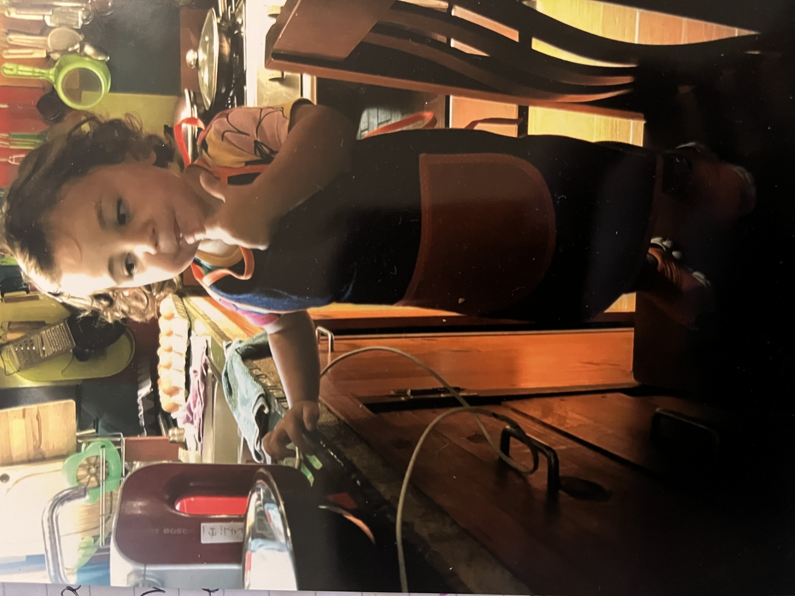

Cocinamos

De mis actividades favoritas. Cocinar juntos. Los peques y yo. Mi madre, la abuela Nonna, les hizo a los tres (falta el de Emi, cuando tenga edad) delantales para la ocasión. Tenemos una receta por excelencia que es "Punto Nieve" dícese del merengue, que luego nos comemos a cucharadas. En el 2017 o 2018, quien sabrá, hice un curso de respostería, básico, porque decorando soy media queso, pero hacer las tortas (pasteles) me encanta. Y por suerte, nunca me faltó ayuda. Así que cuando descubrí las Cakepops, a ellos les coparon, pasó a ser nuestra receta favorita en segundo lugar.